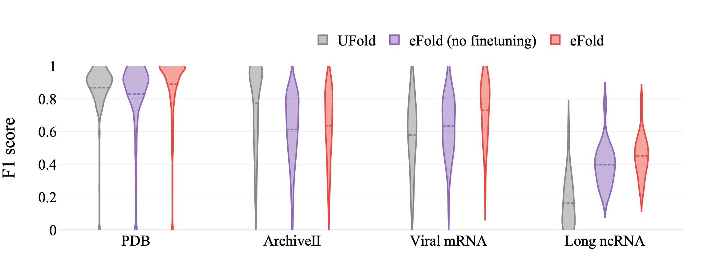
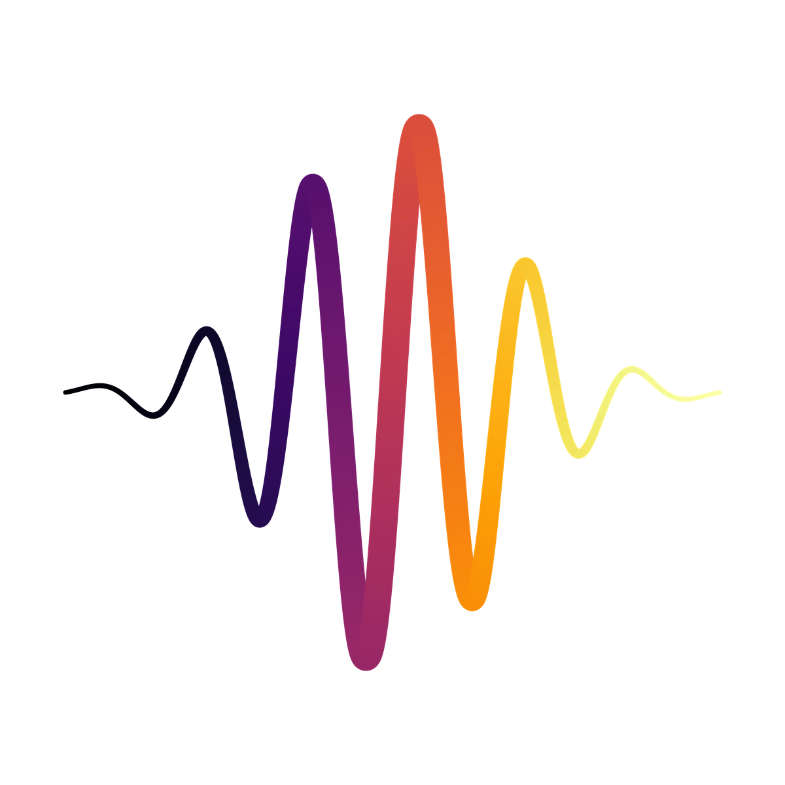
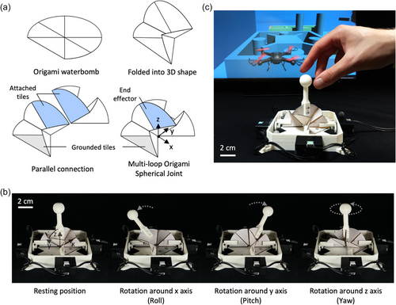
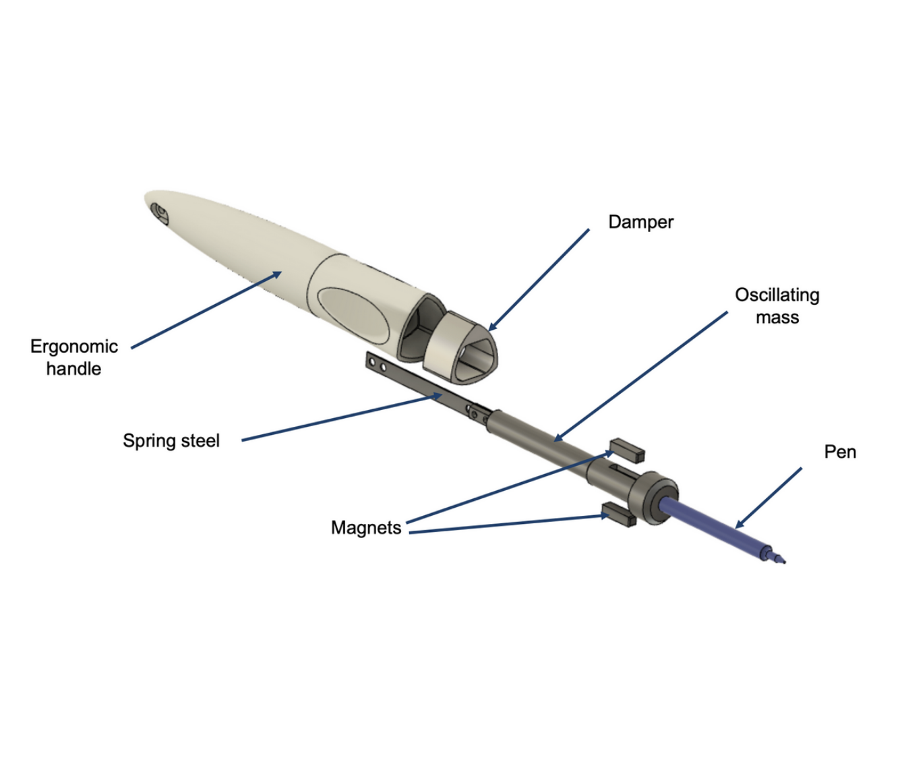

Research: Weather
I work at the intersection of AI and physics, developing AI models for global and regional forecasts, and more. Sadly, the exciting research we do at Atmo isn't public.
Research: RNA
RNA is a programmable polymer - a chain of nucleotides that folds via base-pairing and stacking. Its structure - secondary (pairs and loops) and tertiary (3D shape) - governs function in gene regulation, translation, and viral replication. Modeling RNA structure helps interpret experiments and design sequences with desired behaviors.
eFold: an AI model to predict the RNA structure Paper Code Data
The effort expands training diversity and introduces eFold, an AlphaFold-inspired architecture adapted to RNA. By mixing probing-backed structures and synthetic constructs, the model reduces overfitting to short/simple motifs and improves long/complex sequence performance.
SEISMIC - DMS-MaPseq processing and DREEM clustering Code
DMS-MaPseq is a chemical probing method where dimethyl sulfate modifies flexible A and C bases. During reverse transcription, these modifications cause characteristic mutations, so sequencing yields per-nucleotide reactivity that reports local structure. RNAs often adopt multiple conformations at the same time, so different reads reflect different folds. Clustering reads by shared mutation patterns separates co-existing structures into ensembles instead of averaging them, which makes downstream modeling more accurate. SEISMIC computes these reactivities and performs clustering at scale.
Research: Soft robotics
Rapid prototyping and modeling: IMU-based proprioception for long soft arms and data-driven origami kinematics.
IMU proprioception for soft arms - IROS 2022 Paper Code
An 80-cm hyper-redundant arm instrumented with IMUs along its body. Orientation chains fuse gyro/accel with a geometric prior to reconstruct shape, reaching >90% accuracy at low cost and minimal calibration.

Double-Waterbomb origami kinematics Paper
A rigid panels + flexible hinges mechanism with hidden DOFs. A data-driven model maps actuator states to pose for control without deriving full analytical kinematics on the multilink structure.
Personal projects
Hands-on builds: from anti-tremor mechanisms to IoT systems and custom mechanisms.
ATPen - mechanical low-pass filter for tremor
A pen with a tuned mass/suspension that attenuates high-frequency hand tremors while passing intentional low-frequency motion, improving handwriting legibility. Built via iterative FEM-guided design and patient tests. Pitch · Press
Snap-off mechanism knife
A machined aluminum/steel utility knife with a spring-latched rotating bar that locks the blade open/closed. Depressing the spring disengages the latch to re-position the blade; locks snap in at end stops.
Odeji - smart meeting organizer (IoT + Web + App)
An IoT device with LEDs and a custom PCB connects to a webapp and Android app. A simple architecture syncs schedules and timing, giving the host real-time cues to keep meetings on track. Project
Smart mirror - bathroom health mirror
A wall mirror with embedded camera and UI widgets captures daily frames and plays a fast-forward of appearance changes, alongside health metrics and goals.

SubliminAI - ControlNet images with hidden messages
The system encodes a user word into a black-white map used as seed/control for a diffusion model via ControlNet, steering images to subtly contain the text. Prompt reformulations generate frames stitched into a GIF.
Qualicall.AI - customizable QA for contact centers
A scoring engine tailored per client with domain-specific question sets, call emotion analysis, and flexible weighting. Built for smaller centers to get actionable QA without heavy integration.
Manifesto
“The greatest enemy of knowledge is not ignorance, it is the illusion of knowledge.” - Stephen Hawking.
I pledge to bow my convictions to evidence and reason and not to my interests. I believe that humility and truth-seeking is the ultimate pathway to peace, justice and prosperity in the world. I believe in the right to admit being wrong. Rationalism is a humanism.